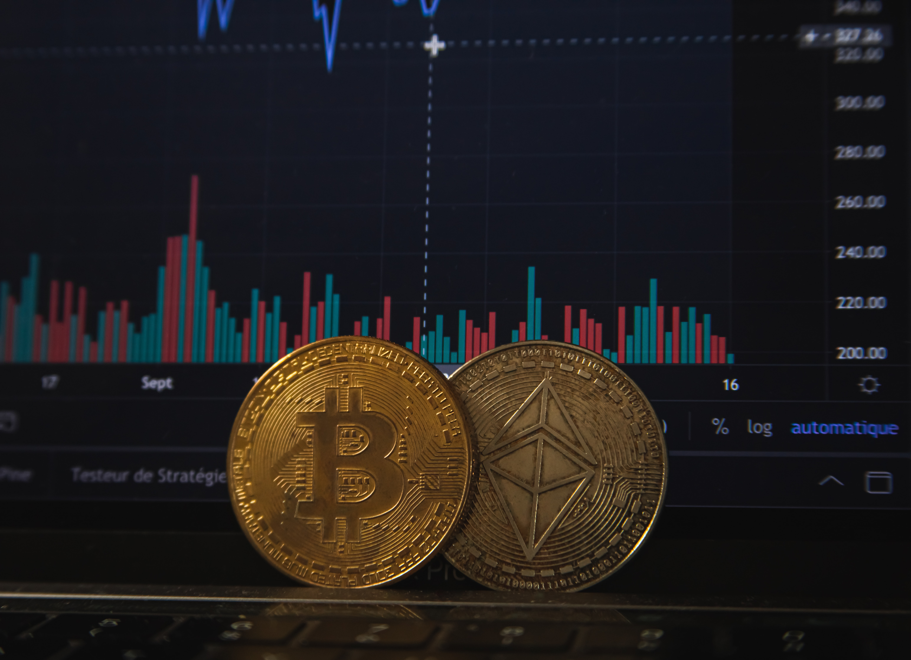
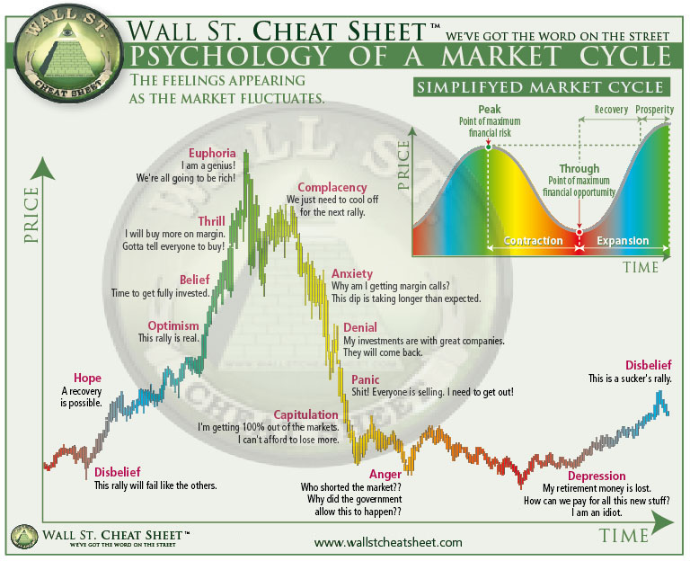
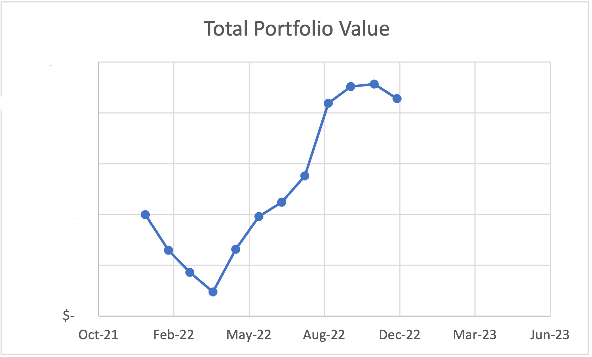
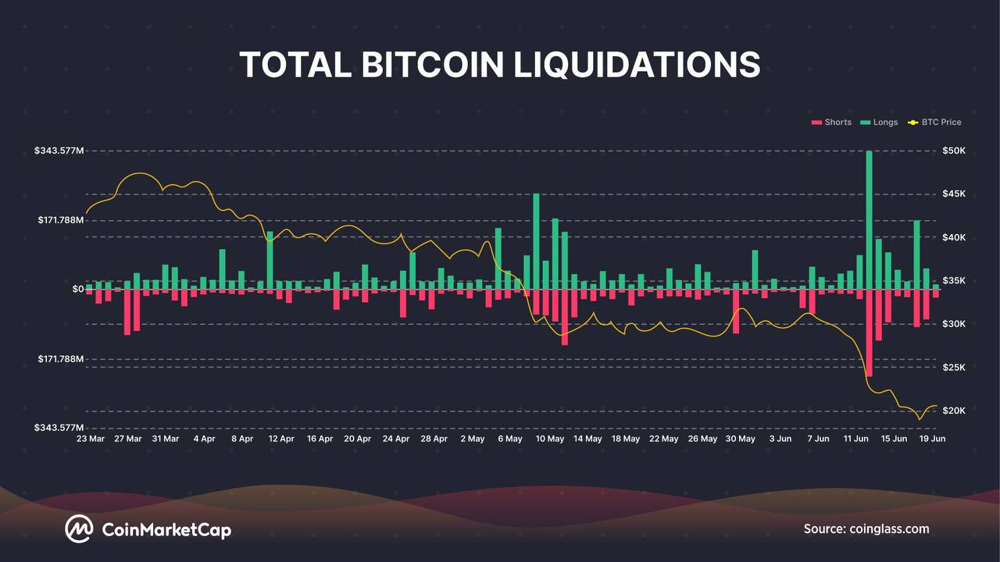

Trading Mentality
18th Jan, 2022
The simplest definition of trading in my opinion is buying and selling assets with a goal of making profits. For example, if you buy asset X for $100 and sell it to someone for $150 at a later timepoint, you earn a profit of $50; else if you sell it to someone for $50, you loss $50.
I strongly believe that trading is a game that requires a combination of skill, hard work, discipline and just a little bit of luck. The key here is having the right mentality. A trader’s mentality is sort of like a root that shape his/her trading system or strategy, which is then used to plan and execute trades.
A trader’s mentality is highly affected by two factors: GREED and FEAR. Greedy you tend to make decisions that are risky, but I don’t think they are necessarily bad; while FEAR drives you to make decisions that avoid any sort of risk, and you end up with a little return. In my opinion, your trading mentality should have a mix of both emotions and not let them control your decisions.
In this article, I will first provide some background on trading, followed up by delving into the psychology of a market cycles and the mentality that traders should adopt in order to be successful.

Trade | Invest
In case you’re wondering what’s the difference between investing and trading: Trading in essence is buying financial instruments such as stocks, currencies, cryptocurrencies and sell it someone else for a higher price. You can do this quickly, like in a day, a week or sometimes up to months (depending on your trading strategy). Investing on the other hand, also involves buying assets such as stocks, real estate, cryptocurrencies but here, you are keeping it for a longer period of time, like a few months up to several years, and selling it for a higher price but with the goal of earning a profit from long-term price appreciation. Of course, there are still many other differences but the distinct difference here is the timeline.
One of the main reasons why you should consider trading is to combat inflation. The latest released inflation data as of November 2022 in the United Kingdom (where I am currently based) is 9.3%. This basically means that you are losing 9.3% of your money every year as you can buy lesser stuffs with the money in your bank account. NB putting money in the bank will only generate you an annual return of ~2%, you are still losing money, meanwhile the average return for S&P500 (an index fund) was 8.91% for the past 20 years, the average return for Bitcoin (a cryptocurrency) was 106.7% for the last 10 years.
Trading psychology
The financial market is mainly classified as either a bull or a bear market, and they happen every few years. I would definitely recommend you this video by Ray Dalio that explains what bull and bear market are, why they happen and what are the consequences. A lazy and simple way to understand this is that: strong economy -> people became richer and buy more assets -> asset price goes up -> bull market; weak economy -> people became poorer and couldn’t afford buying assets (they would prioritize saving money instead) -> asset price goes down -> bear market.
You might have seen this chart somewhere on social media, it is the Wall Street Cheat Sheet. This chart summarizes how investors and traders behave during different phases of the market cycle, such as optimism, euphoria, fear and despair. With this, we can understand how market participants react during different phases of market cycle, but it’s important to note that not all market cycles will follow this exact pattern, as the market and economy can be so unpredictable and irrational.

- In the beginning, only a few people arrived and hanging out before the party officially starts, and they are having a good time! This is the “accumulation phase” – smart investors are quietly buying up assets at low price.
- As more and more people arrive as the party’s starting soon, the atmosphere become livelier and more optimistic. This is the “mark-up phase” – prices are starting to rise and everyone is buying, getting excited about making money.
- The party then reaches its peak, with music blasting loudly, drinks flowing, everyone dancing and having a great time. This is the “euphoria” phase in the market, where prices have risen to around their highest point, and everyone is convinced that they’re going to make a fortune (to the moooon).
- As the party goes on, some people are starting to get tired, especially the early goers and they decided to leave. At this time, some decided to leave as well seeing that some people are leaving, some are still having a good time while some just arrived, unsure how long the party goes on until. This is the “complacency” phase – some investors/traders are starting to sell their assets and take their profits, some sell their assets seeing that the price are going down, some are not selling as they don’t think the price will go down further while some bought more of the asset when its price came down, thinking that they bought the asset at a better price.
- It’s getting very late and the party is winding down. More people are leaving and the atmosphere is getting quieter. Even more people now leave either because their friends are leaving, or they saw that the party is winding down. This is the “distribution” phase – where prices are falling, and investors, traders or the general public are starting to panic and sell their assets.
- Finally, the party is over and most of the guests are gone. There will be some people left though: mostly the drunk ones and the ones who came late. This is the “depression” phase – where asset prices have reached to its lowest price, left with people who are unwilling to leave the market (drunk) and people who buy the asset when its price is declining (late-comers).
To give an simple analogy of the chart itself, imagine a group of people at a party:
Mentality
I’ll talk you through some mental traits that you must be equipped with while trading. I have been trading cryptocurrency since January 2022, and I think the best way to summarize my trading journey is to show you my portfolio value trajectory (will not disclose the value), look at the figure below:

In short, I entered the crypto market under the influence of a friend (that time I had no knowledge about crypto to at all, just wanted to make some money). I lost lots of money at the first few months to a point where I wanted to quit trading (I think my portfolio went down -89% at its worst lol). I somehow recovered all my lost money back with some good trades and several high leveraged trades (in other words you can interpret this as borrowing money to trade) [NEVER DO THIS].
1. Patience, patience, patience
I am sure everyone wants to 100x an investment. But the harsh truth is, even a 10x return is incredible for an investor/trader. Most of the time I used to FOMO (fear of missing out) into a trade (in other words this means I only buy when I see other people buying it), and this is really what caused me to lose lots of money (I bought random coins when I first started crypto because I saw people buying it on twitter or when the coin price pumps lol). It is important to remember that every now and then there will be free money on the floor to pick up in the market (this requires technical analysis; I won’t delve into this). This wouldn’t come very often especially during a bear market, but if you have enough patience, you’ll be able to pick these money up without losing unnecessary money before the opportunity even comes.
You are not going to win/catch every trade. And that’s totally okay. The market will be there no matter what and there will be opportunities to make money.
It is good to always obey to the conventional trading wisdom: “you should aim for 10% portfolio gains annually, which will double your investment every 7 years with compounding”. Yes, your goal should be 10% a year, not 10,000%! Accumulating smaller wins so that you earn more is far easier than trying to accumulate wealth in a short period of time.
2. Risk management
Respect your money. Love your hard-earned money and appreciate how difficult it was to earn it. Avoid risky trades. How would you say that a trade is consider risky? Well, that depends on your trading system, I normally will not risk more than 30% of my portfolio value in a trade, a good rule of thumb would be: if your trade keeps you up at night, you should really reassess your trading system. IF and only IF you are confident in a trade idea, you can justify putting in a larger percentage of your stack for a greater return. This is why greed and fear come hand-in-hand while trading in my opinion.
NEVER use leveraged trades unless you’re a degenerate. You are at a much higher risk of getting liquidated (which means losing the money you invested). Yes, I did mention that I recovered my portfolio using leveraged trades, and I’m doing that basically to gamble. Imagine if my trade idea was wrong, I probably will blow up the rest of my portfolio. I knew that but I thought I would just risk the rest of my portfolio since I’ve already lost so much.

In addition, you should always preach using stop losses, it is important to know that there will be winning and losing in trading, what’s more important is that you don’t hold onto losing ideas. Calculate how much money you are willing to lose in a position rather than keep holding it, hoping that its price will skyrocket. I would rather 2x my portfolio slowly than to roll the dice and risk my hard-earned money, because I have done that and knew that in the long run, you will most likely lose.
3. Discipline
Stick to your trading plan. To give a bad example, I used to come up with plan on trading asset X, then went on to sell asset X just because its price is going down for a bit, afraid that I will lose more money. This is known as panic selling. This is when your emotions take over you and probably is the main reason for many failed trades. If not one but many of your trading plans failed, then the root of the problem is probably how you plan and execute your plan, so panic buying/selling wouldn’t help a lot.
I would highly recommend creating a trade log that records all your trades and note down your win rate to see how well your trading strategy works, and if your win rate is low or you are not making profit, you should probably take a break and reassess your trading strategy. Also, if you are spending most of your time looking at charts, I would highly recommend you to shut off your monitor and go take a walk or break. Find something else better to do, because this means you are most probably risking too much money and you are worried that you’ll lose them.
To make money, you must learn how to protect it and let it grow at a healthy pace. It is much much much harder to maintain your wealth than to build your wealth.
Conclusion
I’ve lost so much and have learned that it’s not until you lose money only then you will start to appreciate money. If you enjoy rollercoaster rides of emotions and financial gain or loss, trading is probably your way. I could have done better, but I knew trading is a journey and it will always have its ups and downs. Before starting, remember to formulate clear strategies and stick to it. Don’t let your emotions take impulsive trades. Take some breaks now and then. Record your trades and see how it goes. :)